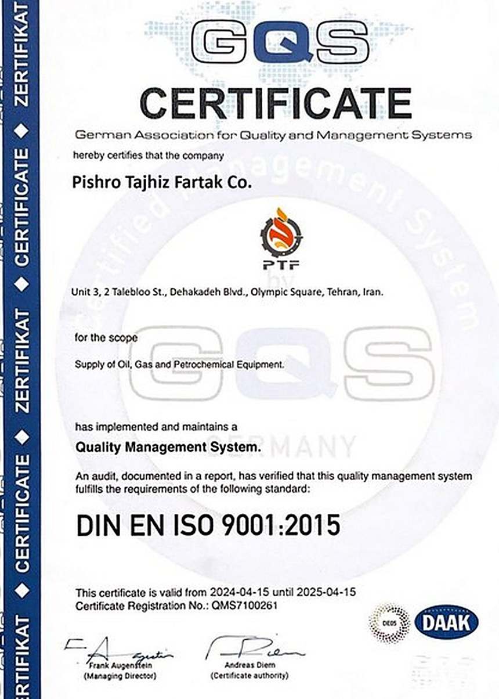
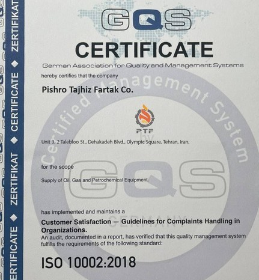
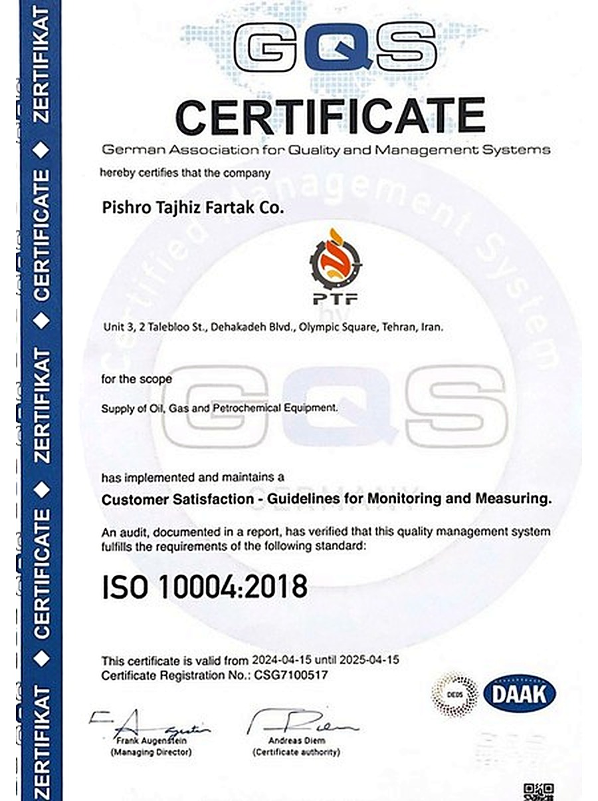
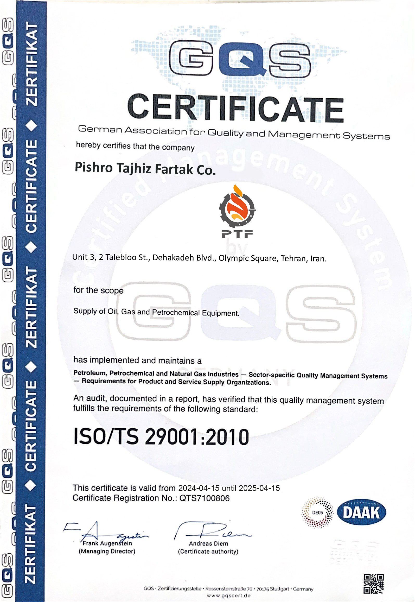
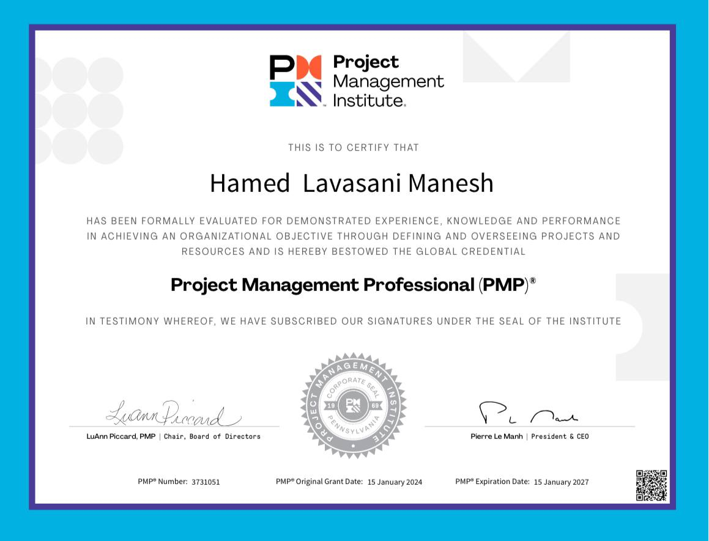
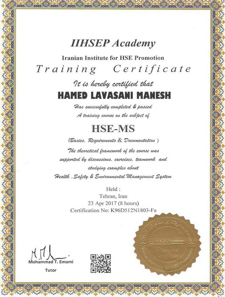

پیشرو تجهیز فرتاک با دارا بودن گواهینامههای معتبر بینالمللی ISO در حوزه کیفیت و رضایت مشتری، تعهد خود را به بالاترین استانداردهای خدمترسانی اثبات کرده است.
شرکت پیشرو تجهیز فرتاک با اخذ گواهینامههای بینالمللی ISO 9001:2015 (مدیریت کیفیت)، ISO 10002:2018 (رسیدگی به شکایات مشتریان) و ISO 10004:2018 (پایش و اندازهگیری رضایت مشتریان) از مرجع صدور GQS آلمان، تعهد خود را به کیفیت خدمات و مشتریمداری اثبات کرده است. همچنین مدیریت شرکت دارای گواهینامه آموزشی تخصصی HSE-MS (سیستم مدیریت بهداشت، ایمنی و محیط زیست) است.

سیستم مدیریت کیفیت (QMS) — صادره از GQS آلمان

رضایت مشتری — رسیدگی به شکایات مشتریان — صادره از GQS آلمان

رضایت مشتری — پایش و اندازهگیری رضایت مشتریان — صادره از GQS آلمان

سیستم مدیریت کیفیت ویژه صنایع نفت، گاز و پتروشیمی — الزامات سازمانهای تامینکننده کالا و خدمات — صادره از GQS آلمان

گواهینامه بینالمللی مدیریت حرفهای پروژه (Project Management Professional)

گواهینامه آموزشی تخصصی مدیریت بهداشت، ایمنی و محیط زیست (مدیریت شرکت) — موسسه IIHSEP